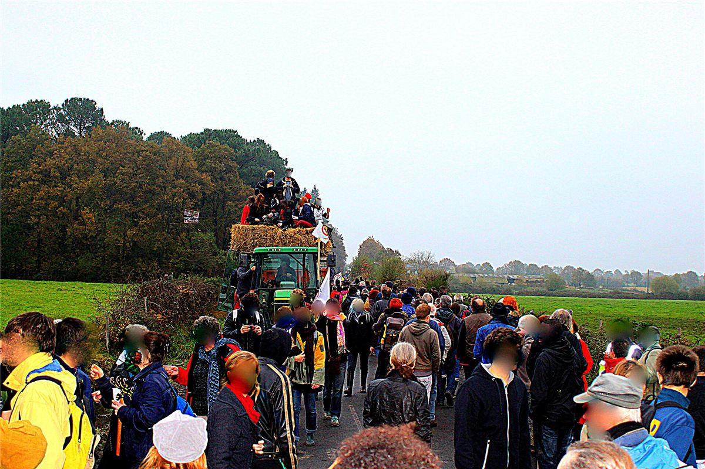
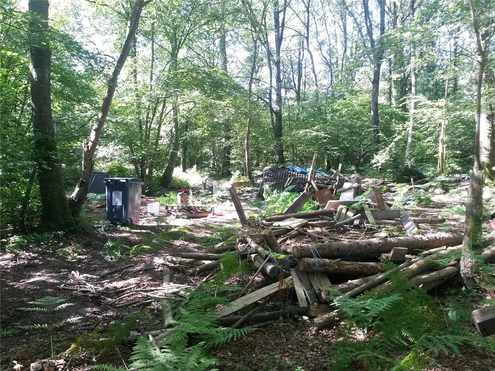

Mamie a fait le voyage en tracteur, en novembre 2012, avec des dizaines de milliers d'autres. Elle a vu des cabanes dans les arbres, des fermes squattées, des vaches et des barricades. Et six ans plus tard, elle a vu l'État abandonner son aéroport. Il est rare qu'une lutte gagne aussi nettement : ça vaut la peine de comprendre comment.
Un projet vieux de cinquante ans
L'idée d'un grand aéroport au nord de Nantes date des années 1960. En 1974, l'État délimite sur les communes de Notre-Dame-des-Landes et alentour une « zone d'aménagement différé », une ZAD, de 1 650 hectares : un bocage de prairies, de haies et de mares, cultivé par des fermes familiales. Le projet dort pendant des décennies, puis revient au début des années 2000. Fin 2010, l'État confie la construction et l'exploitation de l'aéroport, pour 55 ans, à une filiale du groupe Vinci.
Dès le début, des paysannes, des paysans et des habitants s'y opposent, réunis notamment dans l'ACIPA (association citoyenne intercommunale des populations concernées par le projet d'aéroport). Pendant longtemps, ils sont seuls.
2009 : « habitants qui résistent »
En août 2009, un camp action climat se tient sur place. Des habitants lancent un appel : venez occuper les terres et les maisons vidées par les rachats. Des militantes et militants venus de partout s'installent dans des fermes abandonnées, puis construisent des cabanes. Le sigle administratif est détourné : la ZAD devient la « zone à défendre ». Le slogan du mouvement : « Contre l'aéroport et son monde ».
2012 : l'opération César
Le 16 octobre 2012, l'État lance l'opération César : environ 1 500 gendarmes et policiers viennent expulser les occupants et raser les maisons et les cabanes. La résistance est acharnée : barricades, cabanes perchées, tranchées, gaz et grenades dans la boue pendant des semaines. Et partout en France, des comités de soutien se forment.
Le 17 novembre 2012, une manifestation de réoccupation rassemble environ 40 000 personnes. Avec des tracteurs, des outils et des planches, elles construisent en une journée de nouvelles cabanes et un grand hangar collectif, la Châtaigne. En avril 2013, les forces de l'ordre se retirent. L'État a perdu la bataille du terrain.

2016-2018 : de la consultation à l'abandon
- Le 26 juin 2016, le gouvernement organise une consultation des habitants de Loire-Atlantique. Le « oui » à l'aéroport l'emporte à 55 %. Le mouvement refuse de se plier à un vote organisé par l'une des parties, sur un territoire choisi par elle.
- Des experts nommés par le nouveau gouvernement concluent qu'on peut agrandir l'aéroport existant de Nantes plutôt que d'en construire un nouveau.
- Le 17 janvier 2018, le Premier ministre Édouard Philippe annonce l'abandon définitif du projet. Après plus de quarante ans, l'aéroport ne se fera pas.
Avril 2018 : les expulsions
Mais l'État veut aussi en finir avec la ZAD comme lieu de vie hors des règles. Le 9 avril 2018, des milliers de gendarmes reviennent avec des blindés pour détruire les lieux occupés sans projet agricole « légal ». Les combats durent des jours. Rien qu'en avril, plus de 11 000 grenades sont tirées sur le bocage. Il y a des centaines de blessés ; en mai, un jeune homme a la main arrachée par une grenade. Une partie des cabanes et des maisons, dont certaines construites pendant des années, est rasée.

Chronologie
- 1974Création de la zone d'aménagement différé (ZAD).
- Août 2009Camp action climat et appel à occuper les terres.
- Déc. 2010Concession de l'aéroport à une filiale de Vinci.
- 16 oct. 2012Début de l'opération César.
- 17 nov. 2012Manifestation de réoccupation : 40 000 personnes.
- Avril 2013Retrait des forces de l'ordre.
- 26 juin 2016Consultation départementale : 55 % pour le projet.
- 17 janv. 2018Abandon définitif de l'aéroport.
- Avril-mai 2018Expulsions massives ; une partie des habitats est détruite.
- DepuisDes projets agricoles et collectifs continuent sur le bocage.
Dans ce dossier
- Vivre et décider sur la ZAD : composantes, assemblées, communs.
- Victoire, divisions et héritage : ce que la ZAD a changé, et les débats qu'elle laisse.
Sources et pour aller plus loin
Lire
- Contrées. Histoires croisées de la zad de Notre-Dame-des-Landes et de la lutte No TAV dans le Val Susa, collectif Mauvaise Troupe, L'Éclat, 2016.La lutte racontée par celles et ceux qui l'ont faite.
Sur le web
- zad.nadir.orgLe site d'information tenu par des occupantes et occupants de la ZAD.
- La ZAD de Notre-Dame-des-Landes sur WikipédiaL'histoire de l'occupation, des expulsions et de l'après.
- Le projet d'aéroport du Grand OuestLe projet, la concession, la consultation et l'abandon.
Dossier rédigé par la bande à Mamie à partir de travaux d'historiennes et d'historiens et de textes des mouvements concernés. Libre de reproduction.